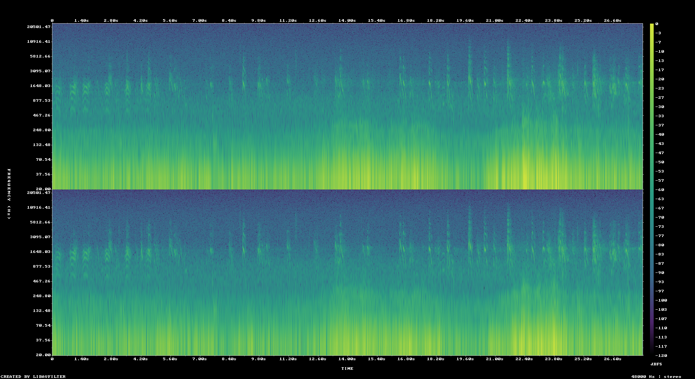

| Start | 00:40:26.000 |
|---|---|
| Duration | 28.000 seconds |
| Cited range | 00:40:29.000 for 21.000 seconds |
| Padding | 3.000 seconds before, 4.000 seconds after |
| Recorded | 2026-01-15T12:59:54+08:00 |
| Location | Yema Haizi, Kangding, Sichuan |
| Recordist | Gewenxin Yu |
| License | CC BY-NC-SA 4.0 |
Seven consecutive BirdNET frames identified Pyrrhocorax pyrrhocorax here, scoring 0.9863 to 0.9998. The cited range covers those frames; the excerpt keeps three seconds before and four after, because a frame boundary is not the start of a call. Recorded with two Primo EM273 omni-directional microphones (-37 dB +/- 3 dB at 1 kHz, 80 dB S/N ratio, 60 Hz ~ 20 kHz) connected to a Zoom F3.
260115_002_Tr1.WAV - 48000 Hz, pcm_f32le260115_002_Tr2.WAV - 48000 Hz, pcm_f32leexcerpt-track1.wav (5,376,206 bytes)excerpt-track2.wav (5,376,206 bytes)preview.ogg (lossy listening copy)spectrogram.pngmanifest.json (complete provenance and technical metadata)SHA256SUMS (package integrity checks){kind=link}